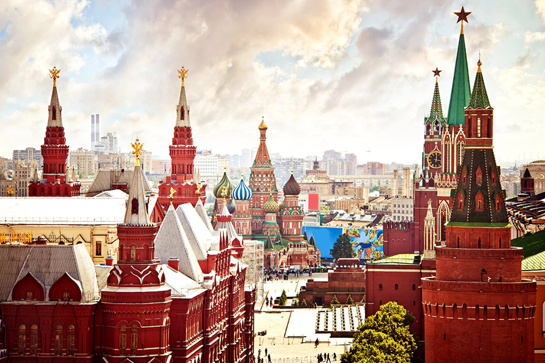
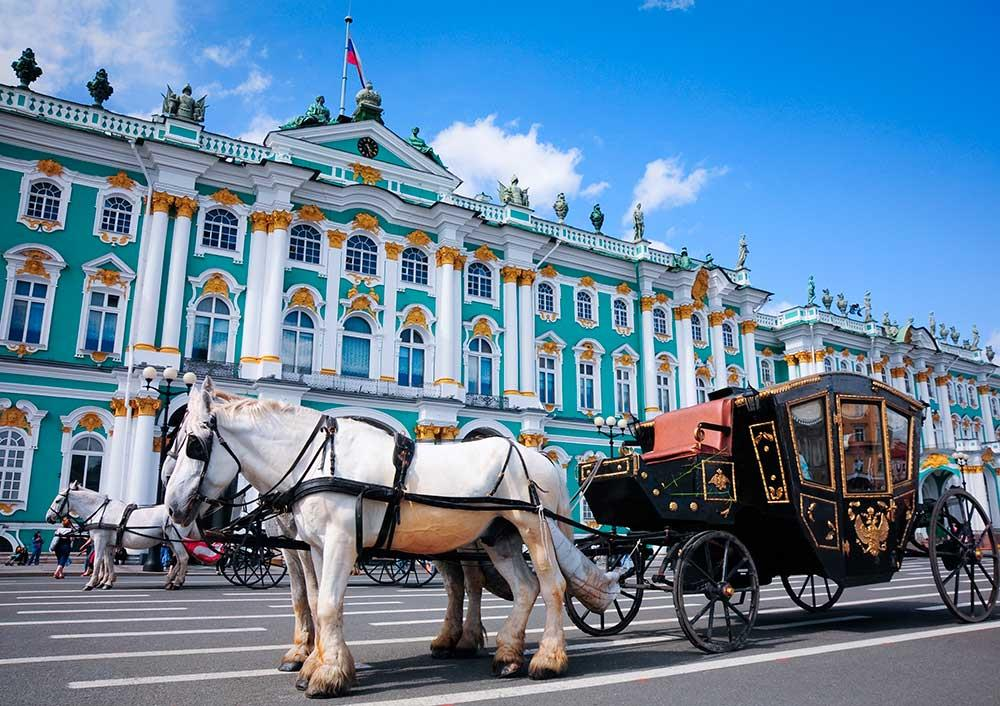
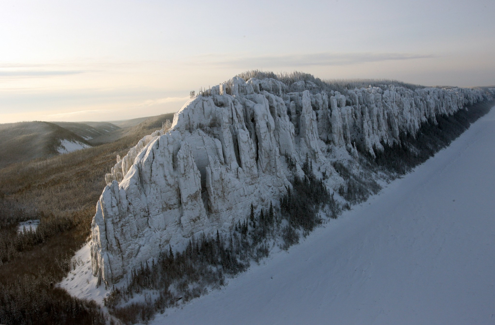
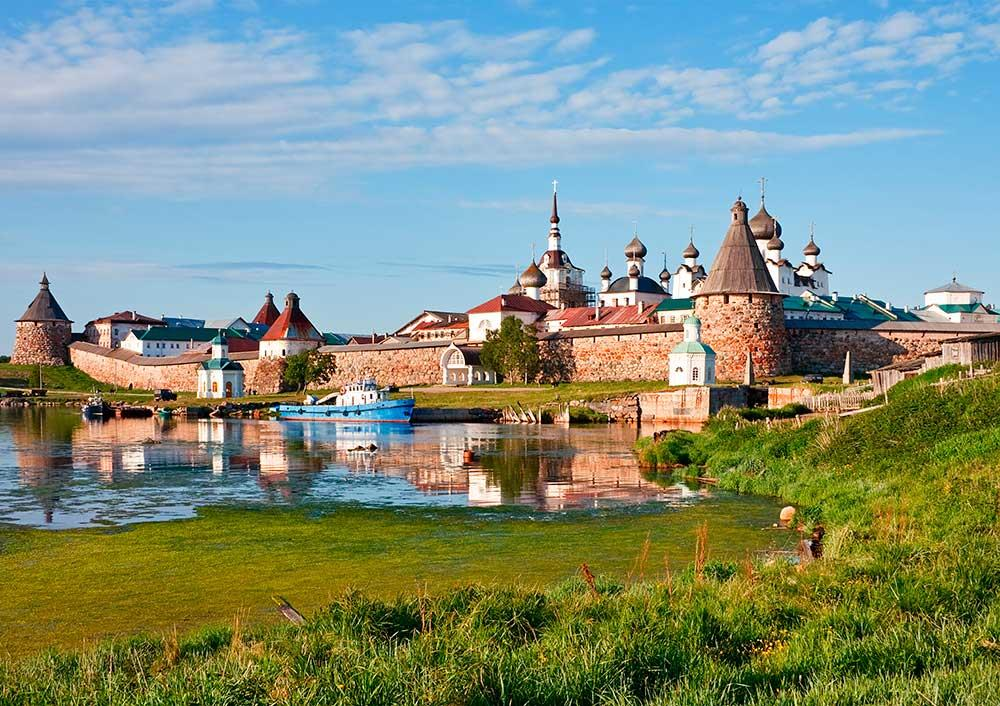
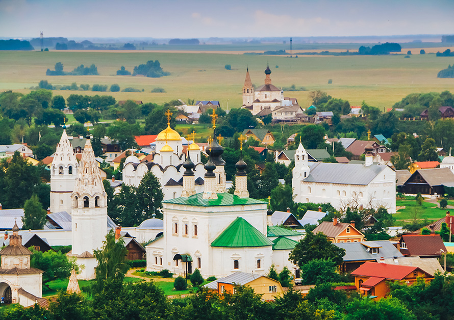
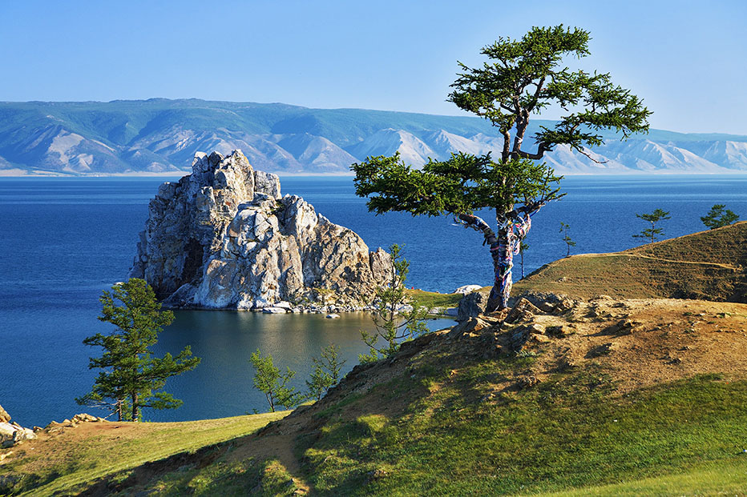
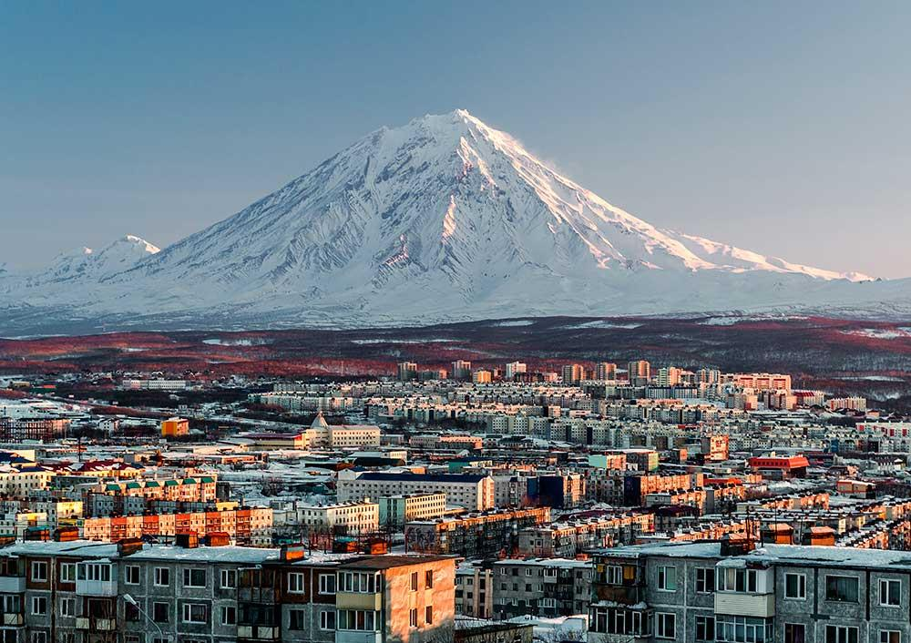
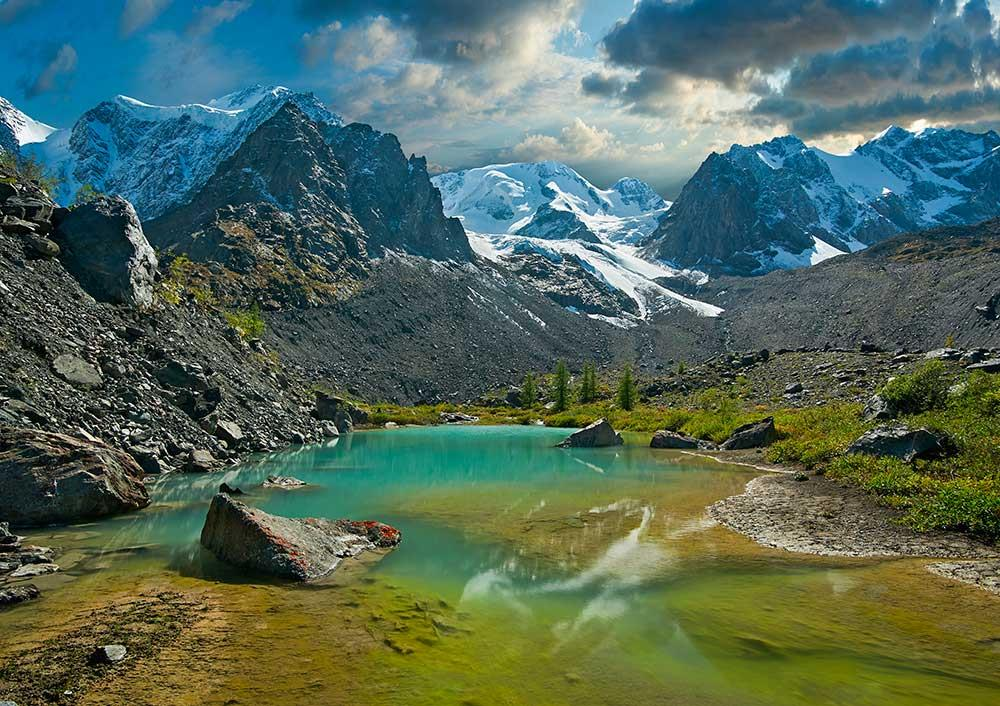
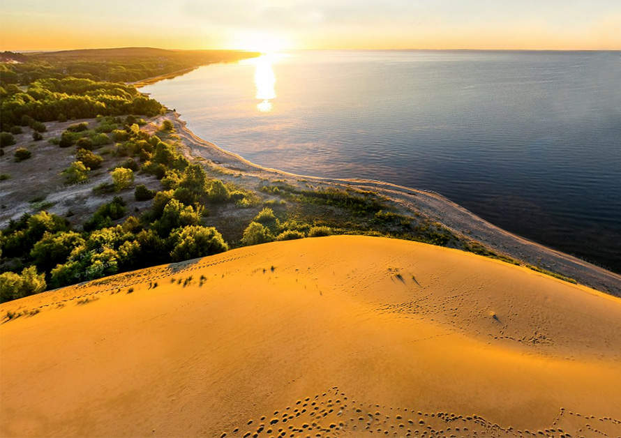
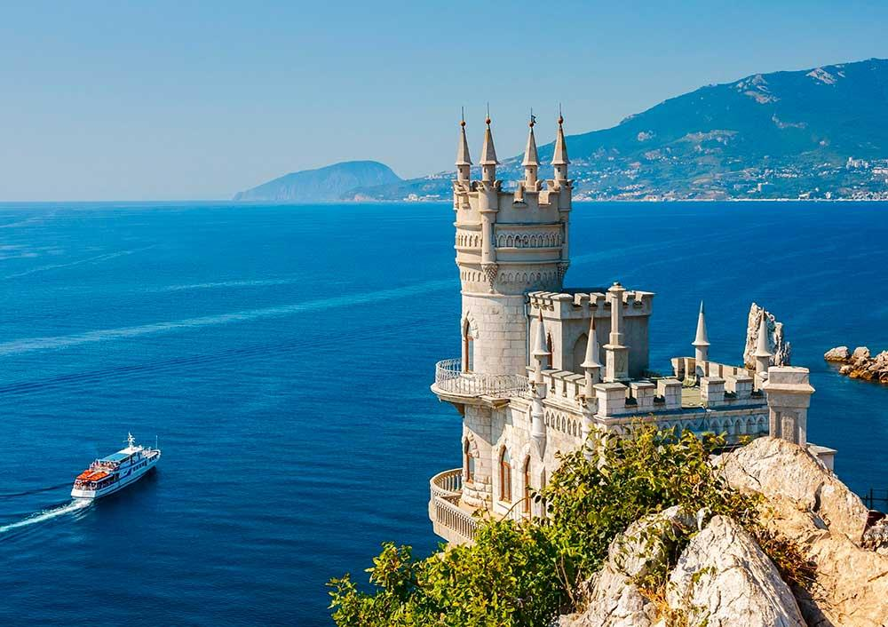

Top Ten Places to See in Russia
Education in Russia is an excellent opportunity to combine study with travel. There are many amazingly scenic sites and unique places of interest in our country.
Moscow Kremlin and Red Square
This is a symbol of the whole country, not just Moscow. The Kremlin is the oldest part of the city where Grand Prince Yury Dolgorukiy built a fortress that was first mentioned in the chronicles in 1147. The Kremlin houses a complex of 15th-19th-century buildings, including the Grand Kremlin Palace, Armory Chamber, the Senate, the current official residence of the Russian president, churches, and examples of Russian cast work such as the Tsar Cannon and the Tsar Bell. Red Square, which dates back to the 14th century, is home to Saint Basil's Cathedral, the State Historical Museum, and the Lenin Mausoleum, the resting place of Bolshevik leader Vladimir Lenin.
Historical Centre of Saint Petersburg
Saint Petersburg is one of the most beautiful cities in the world, primarily due to its unique architecture. Its historical centre and suburbs are known throughout the world for their outstanding architectural monuments, with palaces and cathedrals built by Russian and Italian masters from the 18th and 19th centuries. Must-see sights include the Peter and Paul Fortress, the Peter and Paul Cathedral, the Kunstkammer Museum, Peter I's Summer Palace, the Winter Palace, Smolny Monastery, the Hermitage, the Academy of Sciences, the Academy of Arts, the Marble Palace, the Taurida Palace, the Anichkov Palace, the Kazan and St. Isaac's Cathedrals, the Spit of Vasilyevsky Island, Palace Square, and Nevsky Prospect.
Lena Pillars
The Lena Pillars are vertical rock formations that stretch 40 kilometres along the banks of the Lena River in Yakutia. They date back to the early Cambrian period (530 million years ago).
From afar they appear to form a solid wall that descends into the river. Harsh yet magnificent, their incredible beauty is truly mesmerising.
Solovetsky Islands
The Solovetsky Archipelago includes six islands with a total area of 300 sq. km and is located in the White Sea, 250 km from Arkhangelsk. This area is rich in archaeological monuments, the oldest of which date back to the 2nd and 3rd millennia BC. One of the main sights here is the Solovetsky Monastery, which was established in the first half of the 15th century. In the early 20th century, this centuries-old citadel of Orthodoxy was converted into a camp for political prisoners that existed until 1939. It was only in the nineties that monastic life resumed here.
The Solovetsky Archipelago, which is now a historical and cultural reserve, is fascinating not only because of its dramatic history, but also because of its unusual landscape, including hills, lakes, and gullies.
White-Stone Monuments of Vladimir and Suzdal
These are among the most ancient Russian cities that were at the helm of the old-Russian Vladimir-Suzdal principality in the 12th and 13th centuries and which still preserve some unique architectural and artistic features you won't find anywhere else.
These features include masonry from white limestone, refined proportions, exquisite stone carving, and an exterior "lightness" of the buildings that all blend in with the surrounding landscape.
The Uspensky and Dmitrievsky cathedrals in Vladimir, the Golden Gates, Cathedral of the Nativity in Suzdal, and the bishop's chambers in the Suzdal Kremlin, Spaso-Evfimiyev and Pokrovsky monasteries are the most prominent examples of this architectural style.
Lake Baikal
Lake Baikal in the southern part of Eastern Siberia is a unique natural site that is 25 million years old. It's the oldest freshwater body on Earth and the deepest lake in the world. Baikal is the biggest lake in Russia. It contains 20% of the world's fresh water.
The water in Baikal is completely transparent, and some objects can be seen at depths of up to 40 meters. Its flora and fauna consist of thousands of species and varieties of plants and animals, three quarters of which cannot be found anywhere else in the world. The incredible beauty of the lake and its surroundings with numerous picturesque bays and amazing cliffs attracts tourists from all over Russia and every corner of the world. It is one of the most popular tourist attractions in Russia.
Valley of Geysers and Volcanos of Kamchatka
Kamchatka Peninsula, located in Russia’s Far East is a huge natural volcanology museum that is home to over 300 active and dormant volcanos along with dozens of geysers.
There are 26 volcanos (including 12 active ones), alpine glaciers and lakes within the Kronotsky Nature Reserve, established in 1934. This Valley of Geysers is unique in Eurasia and is a truly global phenomenon. Over 20 large geysers, dozens of thermal springs, and gas-vapor spurts are located on a 6-km stretch of land.
Altai Mountains
Altai is a region in the southeastern part of Western Siberia that boasts a landscape rich in contrasts, including steppes, taiga, alpine tundra, and glaciers. Altai hosts four nature reserves, all under UNESCO protection. The Altai Nature Reserve is home to 1,500 species of higher plants and is famous for Lake Teletskoye (second only to Lake Baikal in terms of volume of fresh water) and the unique taiga landscape around the lake.
The main sight of interest in the Belukha Nature Reserve is the two-peak Belukha mountain (4,506 m), which is permanently covered with snow and glaciers. The summit of this mountain was not reached until the twentieth century.
The Katun Nature Reserve has a predominantly glacial landscape, as glaciers occupy up to 50% of its area. The largest glacier (the Katun Glacier) feeds the Katun River, which is very popular among rafters. There is also a beautiful cascade of glacier lakes here. Finally, the area is home to the Ukok Plateau, a so called "no-take" zone, where ancient cave drawings and ancient burials have been found.
Curonian Spit
This is a sand-covered peninsula in the southeastern part of the Baltic Sea, one of the largest aeolian (created by the wind) formations in the world. People have been reinforcing the structures destroyed by the sea and the wind since the Middle Ages. By the late 17th and 18th centuries, the forested area of the Spit had dropped to 10%. Settlements, roads, and trees were buried under the sand. In the mid-19th century, intensive forest restoration work was started. Today, two-thirds of the Curonian Spit is covered with forest.
The Swallow's Nest (Lastochkino Gnezdo)
This miniature neo-gothic castle is perched on the steep Avrora Cliff in southern Crimea. A structure called the "Swallow's Nest" because of its miniature dimensions (10 meters wide, 20 meters long, and 12 meters high) and location was built in 1912 based on the design of architect Leonid Sherwood.
The castle’s history spans more than a century during which it has gone through several owners and even survived an earthquake. It initially belonged to German industrialist Vladimir Shteyngel. At the beginning of World War I, the new owner opened a restaurant here. In the 1930s, the structure was deemed unsafe and shut down. It was only 30 years later that reconstruction of the building began.